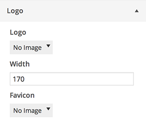
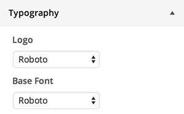
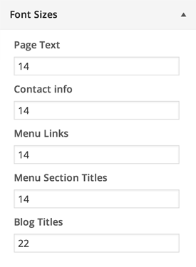
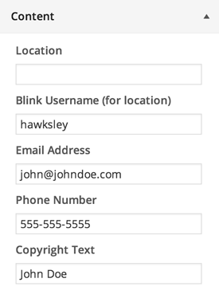
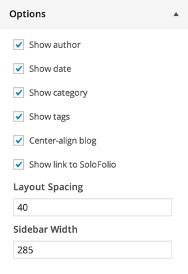
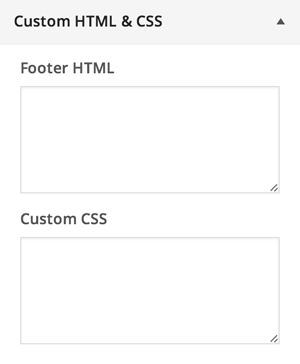
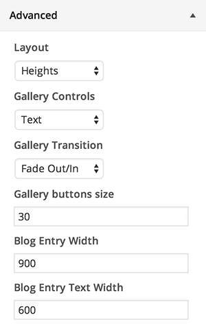

Logo
Logo
Upload your logo here. For best results, use a transparent PNG file at retina (2x) resolution.
Width
Display width of the logo image. Should be 1/2 of uploaded image width to accomodate retina displays.
Favicon
Used in the title bar next to your page title. Upload a 32x32px PNG file.

Colors
Used to select colors for use throughout your site.
Typography
Logo font
Font family used for logo (if no image is uploaded).
Base font
Font family used throughout site.

Font sizes

Content

Blink username
Loads location from Blink username, overriding manually set location.
Location, Email, Phone Number
Displayed with logo.
Copyright Text
Displayed after © and the current year. Example: Joel Hawksley/The Roanoke Times
Options
Show category, date, author, tags
Toggle display of category, date, author, and tags on blog posts.
Show link to SoloFolio
Toggle display of attribution link in footer.
Center blog layout
Toggle centering of blog pages on large displays.
Layout Spacing
Spacing around outside of layout.
Sidebar Width
Change width of sidebar to accomodate different logo sizes.

Custom HTML & CSS
Footer HTML
Insert tracking code (such as Google Analytics) here.
Custom CSS
em For advanced users only Custom CSS rules for additional design customization.

Advanced
Layout
Toggle layout mode between Heights (default) and Horizon (tonavigation bar).
Gallery Controls
Switch between text labels or buttons for gallery controls.
Gallery Transition
Set the default transition for galleries.
Gallery buttons size
Change size of gallery buttons (if enabled).
Blog entry width
Greatest width that blog images will be constrained to.
Blog text width
Greatest width that blog text will be constrained to.
